You run.
We coach.
Already on your wrist.
오늘 뛸지 쉴지, 아침에 열면 이미 정해져 있어요. 런비스가 애플워치의 수면·심박 기록으로 오늘 훈련을 고르고, 달리는 동안엔 꼭 필요한 순간에만 목소리로 코칭합니다.
애플워치 Series 4 이상과 아이폰이면 충분해요. 기록은 무료, 코치만 구독이에요. 대한민국 App Store에 먼저 나오고, 다른 나라는 차례로 출시합니다.
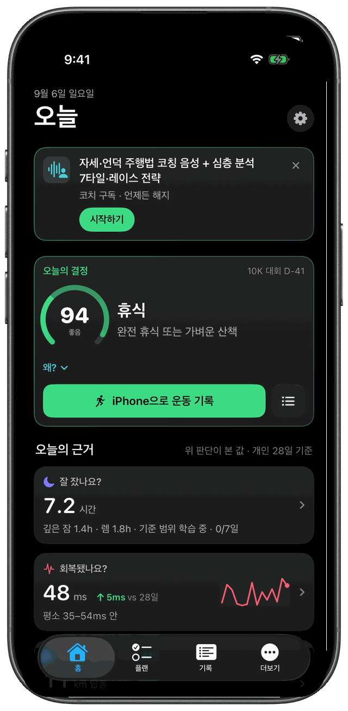
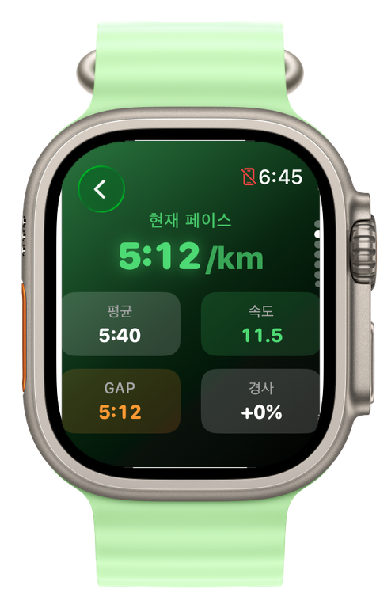
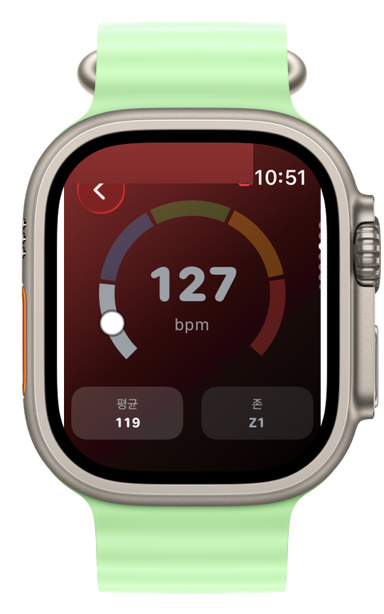
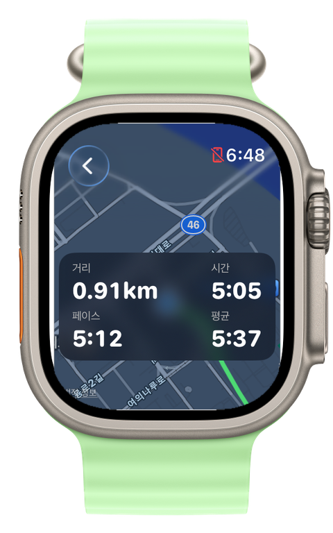
나는 어떤 러너일까요
지금의 나와 가장 가까운 걸 고르세요. 필요한 설명으로 바로 안내해 드릴게요.
러닝 시계를
또 살 필요는 없어요
훈련 부하나 회복 시간을 보려면 가민, 코로스 같은 전용 시계가 있어야 한다고들 하죠. 그런데 그 계산에 필요한 센서는 이미 손목 위 애플워치에 다 들어 있어요.
센서는 이미 손목에
심박, GPS, 케이던스, 고도. 최근 모델은 접지 시간과 수직 진폭까지 잽니다.
계산식은 공개돼 있고
훈련 부하, 회복 시간, 역치 추정은 스포츠과학에서 널리 쓰는 공개 공식이에요. 런비스는 그 공식을 워치와 아이폰 안에서 돌립니다.
빠져 있던 건 코치였어요
숫자를 읽고, 오늘 할 일을 정하고, 달리는 동안 옆에서 말해 주는 사람. 런비스가 그 자리를 채웁니다.
새로 살 기기는 없어요. 차고 있는 애플워치를 그대로 씁니다. 드는 돈은 코치 비용뿐이고, 대한민국 App Store 기준으로 월 ₩1,900, 연 ₩15,000, 평생 이용권 ₩39,000(한 번 결제) 중에서 고르면 돼요. 러닝 시계는 쓰는 사람마다 따로 사야 하지만, 평생 이용권은 한 번 결제로 Apple 가족 공유 그룹이 함께 씁니다. 전용 시계와 무엇이 같고 무엇이 다른지는 지표별로 비교해 두었어요.
아직 워치가 없어도 시작할 수 있어요. 아이폰만 들고 달려도 GPS로 기록되고, 1km(마일 설정이면 1마일)마다 구간 페이스를 알려 드려요. 구독 없이 아이폰으로만 달리면 들리는 음성은 이 구간 안내 하나이고, 자세 코칭은 손목 센서가 있어야 해서 워치에서만 됩니다.
아침에 열면
오늘 할 훈련이 정해져 있어요
어젯밤 수면, HRV, 안정시 심박, 어제 훈련 부하를 최근 28일 내 평소 범위와 견줘 봐요. 그렇게 오늘 훈련을 고르고, 왜 그런지 한 줄로 붙입니다.
워치를 들여다볼 필요도 없어요. "시리야, 런비스에서 오늘 뭐 뛰지" 한마디면 오늘의 결정을 읽어 줍니다. 준비도와 이번 주 계획도 같은 방법으로 물어볼 수 있어요.
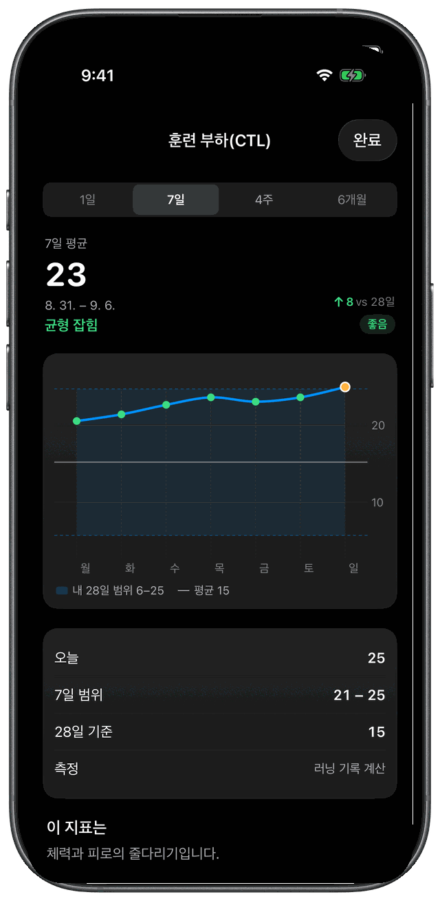
결론이 먼저, 근거는 바로 아래
화면 맨 위에 오늘 할 훈련이, 그 아래에 그렇게 정한 근거가 있어요. 나머지 지표는 참고용으로 그 밑에 모아 두었습니다. 궁금한 숫자를 누르면 뜻과 계산 방식, 내 평소 범위가 나와요.
이 세 칸의 숫자는 화면 구성을 보여 드리려는 예시예요. 옆의 캡처는 실제 앱 화면입니다.
- 컨디션이 떨어진 날엔 강도를 낮추고, 왜 낮췄는지 말해 줘요
- 그래도 원래대로 뛰고 싶으면 그렇게 할 수 있어요
- 근거가 부족한 날엔 숫자 대신 "학습 중"이라고 표시해요
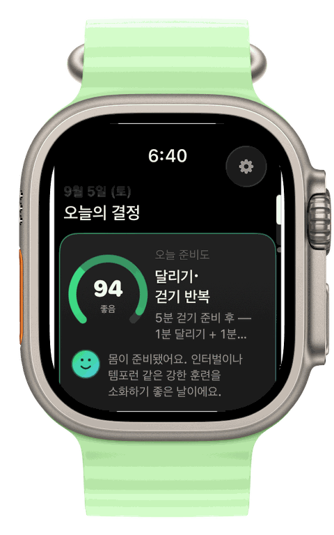
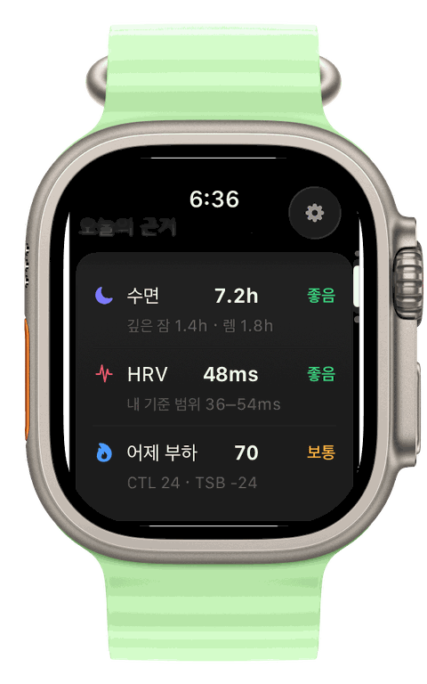
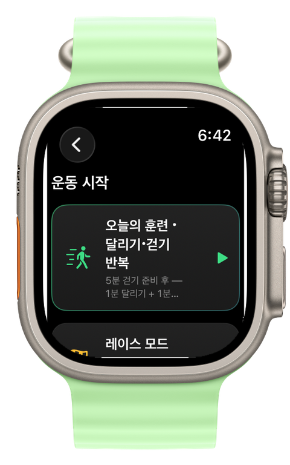
이 페이지의 아이폰 화면 5장과 애플워치 화면 6장은 모두 앱을 한국어로 띄워 찍은 실제 캡처예요. 러닝 중 화면은 실제 러닝에서 찍었습니다. 촬영 후에도 앱은 계속 다듬고 있어서, 받으시는 빌드는 여기 보이는 화면보다 새로울 수 있어요.
필요한 말만,
필요한 순간에
코치의 말에는 모두 센서가 잡은 이유가 있어요. 눌러서 실제 안내를 들어 보세요.
"시리야, 런비스에서 러닝 시작"이라고 말하면 러닝 시작 화면이 바로 열려요. 6개 언어 모두 됩니다.
이지런은 30분에 최대 8번, 템포·레이스는 6번까지만 말하고, 말과 말 사이는 최소 45초를 둡니다. 구간 안내(스플릿)는 이 제한과 상관없이 늘 나오고, 언덕 예고는 횟수 제한은 받지 않되 직전 안내와의 45초 간격은 지켜요. 인터벌은 횟수 대신 켜 둔 항목에 따라 빈도가 정해집니다.
출발 버튼은 한 번이면 돼요무료
화면, 타이머, 자동 시작은 무료예요. 코치가 목소리로 함께 진행하는 부분이 구독입니다.
날씨 브리핑
"현재 기온 26도, 습도 78퍼센트입니다. 덥고 습해서 땀 증발이 잘 안 되는 날이에요."
지금 있는 동네의 실시간 날씨로 알려 드려요.
준비운동
"목 돌리기, 20초. 반대 방향으로. 셋, 둘, 하나."
단계별 타이머가 이끌고, 코치를 켜면 목소리로 함께 세어 줘요.
그냥 달리세요
"달리기 시작하셨네요. 기록 시작합니다."
손목에서 달리기 리듬이 잡히면 알아서 기록을 시작해요.
달리고 나면
숫자보다 이유가 보여요
구간 기록, 심박존, 러닝 다이내믹스, 한 줄 코칭은 무료예요. 구독하면 러닝 도중 가장 빨랐던 구간을 찾아 주는 코치 기록 레이더, 젖산 역치 추정, 이번 주 거리 예산까지 볼 수 있어요.
운동 상세 리포트무료
구간별 페이스, 심박존 분포, 케이던스와 접지 시간 평균, 그리고 이번 러닝에 대한 코치의 한 줄.
몸 리포트무료
준비도, 수면, HRV, 안정시 심박, VO₂max. 누르면 추세 차트와 내 28일 평소 범위가 펼쳐져요.
코치 기록 레이더 (구간 최속 · PR 북)구독
완주 기록이 아니라, 러닝 도중 가장 빨랐던 1K·5K·10K·하프 구간을 최근 90일 기록에서 골라냅니다. 지난 기록과 얼마나 차이 나는지도 함께 보여 줘요.
젖산 역치 추정구독
최근 90일 러닝에서 30분 최고 구간을 2번 이상 찾아 역치 페이스와 심박을 추정해요. 최대심박을 입력해 두면 그 85% 이상으로 버틴 구간만 계산에 씁니다.
30분 구간이 없으면요?
30분 구간이 없으면 20분 구간으로 계산해요. 그것도 없으면 최대심박 85% 이상으로 20분 이상 달린 러닝 세 번의 평균으로 추정하는데, 이 방법은 최대심박을 입력해 둬야 쓸 수 있어요. 어느 방법으로 계산했는지는 화면에 항상 표시됩니다.
코치 브레이크구독
최근 4주 훈련량으로 이번 주 거리 예산을 잡아요. 통증이 있다고 답하면 그 예산을 줄입니다.
런비스 체력 지수구독
베스트 에포트에서 거꾸로 계산한 체력 지수로 거리별 기록을 예측해요. 애플워치의 VO₂max와 나란히 비교해 볼 수 있습니다.
추정값은 '추정'이라고 밝힙니다. 근거가 부족하면 "학습 중"으로 남겨 둬요. 확신할 수 없는 지표는 처음부터 넣지 않았습니다.
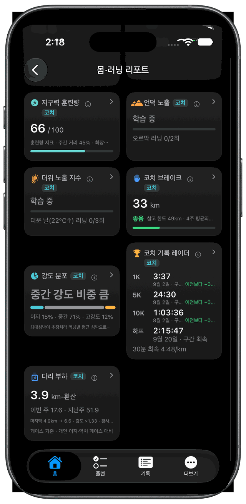
지표를 누르면 내 평소 범위와 나란히 보여요
오늘 값이 최근 28일 내 평소 범위 안에 있는지, 4주 전과 비교해 어디쯤인지 한눈에 보여요. 용어를 몰라도 괜찮아요. 지표마다 뜻과 계산 근거가 붙어 있습니다.
- 훈련 부하, ACWR, 회복 시간은 공개된 공식으로 계산해요
- 운동 상세에서 AI 분석용 리포트를 내보내, 평소 쓰는 AI에 붙여 넣을 수 있어요
- GPX 내보내기와 달린 경로의 3D 플라이오버 영상
대회까지 주차별 플랜,
당일엔 구간 전략
목표 대회와 목표 기록을 넣으면 대회 날까지 주차별 로드맵을 짜 드려요. 지금 체력으로 가능한 목표인지도 솔직하게 말해 줍니다. 플랜 보기는 무료, 워치에서 코치가 구간마다 이끄는 건 구독이에요.
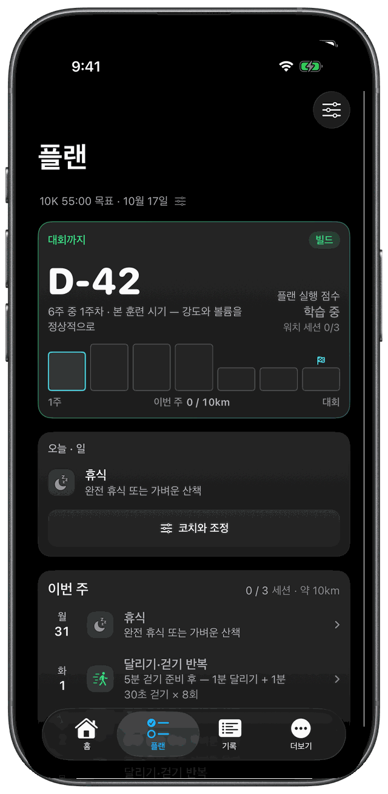
코치를 고르면 플랜도 말투도 달라져요
완주 우선, 균형, 기록 도전. 셋 중 하나를 고르면 훈련 구성과 달리는 중의 말투가 함께 바뀌어요. 막 시작한 러너에겐 어느 코치를 골라도 무리한 인터벌을 넣지 않습니다.
- 인터벌은 구간마다 코치가 이끌고, 끝나면 계획 대비 점수를 매깁니다
- 컨디션이 나쁜 날엔 탭 한 번으로 강도를 낮춰 다시 짜요
- 기록이 없어도 괜찮아요. 워치로 12분 측정 러닝을 한 번 하면 첫 플랜이 나와요
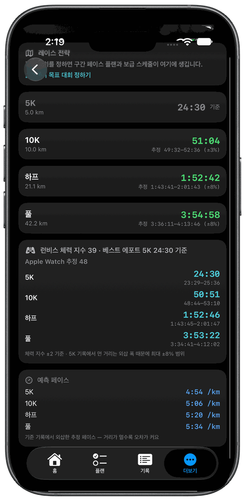
대회 코스를 미리 아는 코치
대회 코스 GPX를 넣으면 어디서 오르막이 시작되는지 미리 알아요. 경사를 반영한 구간 페이스와 보급 시점을 워치로 보내 두면, 대회 날엔 안내만 따라 달리면 됩니다.
- 최근 기록 하나로 5K, 10K, 하프, 풀코스 예상 기록과 목표 페이스까지
- 같은 코스를 다시 달리면 내 최고 기록이 고스트가 되어 얼마나 앞섰는지, 뒤처졌는지 알려 줘요
- 대회 16일 전부터는 대회 날 예보까지 반영한 예상 기록
한국어로 띄워 찍은 실제 앱 화면이에요.
계정도, 서버도 없어요.
터널 안에서도 코치는 말합니다.
기록과 분석은 모두 워치와 아이폰 안에서 이뤄져요. 밖으로 나가는 건 딱 이것뿐입니다. 날씨를 조회할 때 약 1km 단위로 반올림한 좌표, 동네 이름과 코스 자동 생성을 위해 애플 서비스로 보내는 그 순간의 좌표, App Store 결제 처리, 공개 코스·신발 목록 파일 내려받기. 그리고 지금은 대한민국 App Store에서만, 워치와 아이폰의 신발 화면에서 직접 누를 때만 외부 러닝화 검색 페이지가 열려요. 예외는 하나도 빠짐없이 개인정보처리방침에 적어 두었고, 운동·건강 데이터는 어디에도 올라가지 않습니다. 개인정보처리방침
기록은 무료,
코치는 월 ₩1,900
기록, 플랜 보기, 리포트는 무료예요. 코치가 직접 말하고 분석해 주는 기능이 구독입니다. App Store가 체험 대상으로 판단한 계정은 첫 1개월을 무료로 써 볼 수 있고, 월간이든 연간이든 무료 기간은 똑같이 1개월이에요.
- GPS 기록, 페이스, 심박, 랩, Apple 건강 저장
- 운동 상세 리포트, 몸 리포트, 기록 목록
- 훈련 플랜 보기, 기본 레이스 예측, 날씨 브리핑과 준비운동 화면, 워치 레이스 모드와 내 최고 기록 고스트
- 워치로 달릴 때: 스플릿(단위는 기기 설정을 따라요), 심박존, 페이스, 언덕 예고, 경로 이탈 경보 음성
- 아이폰만 들고 달리면 무료 음성은 스플릿뿐이에요
- 러닝 후 팁 카드
- GPX 내보내기, AI 분석용 리포트
| 월간매달 자동 갱신 · 언제든 해지 | ₩1,900 |
|---|---|
| 연간한 달 1,250원꼴 · 월간보다 약 34% 저렴 | ₩15,000 |
| 평생 이용권한 번 결제 · 자동 갱신 없음 · Apple 가족 공유 | ₩39,000 |
대한민국 App Store 가격이에요. 다른 나라에서는 그 나라 App Store가 정한 현지 통화 가격이 적용됩니다.
한국 밖에서 보고 계신다면 대략적인 수준만 참고해 주세요. 월 ₩1,900은 약 US$1.4, 연 ₩15,000은 약 US$11, 평생 이용권 ₩39,000은 약 US$28쯤이에요. 실제 결제 금액이 아니라 참고용 환산입니다.
다른 나라 가격, 절약률, 본전 계산
위 환산은 감을 잡으시라고 적은 대략적인 값이고, 실제 결제 금액이 아니에요. 애플은 환율이 아니라 나라마다 따로 정한 가격 단계로 받기 때문에, 실제 금액은 이 근처에서 오르거나 내려갑니다. 다른 나라 가격이 정해지면 이 페이지에 실제 금액을 적을게요. 앱의 구매 화면은 추측하지 않고, 스토어가 알려 주는 그 나라 가격을 그대로 보여 줘요.
연간은 ₩15,000. 대한민국 App Store 기준으로 한 달 1,250원꼴, 월간보다 약 34% 저렴해요. 다른 나라는 가격대가 달라 이 비율도 달라질 수 있어서, 실제 절약률은 앱의 구매 화면이 그 나라 가격으로 계산해 보여 줘요. 체험 대상 계정이면 연간에도 무료 기간이 붙지만 월간과 똑같이 1개월이에요. 1년이 아닙니다. 1개월이 지나면 1년 요금 ₩15,000이 한 번에 결제돼요.
구독 대신 평생 이용권 ₩39,000. 출시 기념 가격이고, 나중에 가격이 올라도 이미 구매하신 분께는 영향이 없어요. 대한민국 App Store 가격으로 연간 ₩15,000 기준 약 2.6년, 월 ₩1,900 기준 약 20개월이면 본전입니다. Apple 가족 공유가 되는 요금제는 평생 이용권뿐이에요.
구독하는 순간 바로 켜져요
- 달리는 동안 코치 음성: 자세, 언덕 달리는 법, 회복, 격려
- 플랜 실행: 구간마다 코치가 이끌고, 끝나면 계획 대비 점수
- 레이스 전략: 구간 페이스 플랜, 보급 스케줄, 대회 리허설
- 베스트 에포트로 계산한 런비스 체력 지수가 5K부터 풀코스까지 기록을 예측해요
기록이 쌓이면 채워져요
- 리포트에 심층 분석 타일 8개가 열려요
- 젖산 역치(추정)
- 지구력 훈련량
- 언덕 노출
- 더위 노출 지수
- 코치 브레이크
- 강도 분포
- 코치 기록 레이더 (구간 최속 · 최근 90일)
- 다리 부하
- 주간 코치 요약 카드: 계획 대비 점수, 이번 주 가장 빨랐던 구간, 남은 러닝 예산, 최근 4주 강도 분포, 다음 주에 바꿀 한 가지. 무료에서는 잠긴 미리보기로 보여요.
값은 언제 채워지나요?
타일 8개는 결제하는 순간 열리고, 숫자는 기록이 쌓이면서 채워져요. 그전까지는 타일마다 무엇이 더 필요한지 알려 줍니다.
- 젖산 역치(추정): 최대심박 85% 이상으로 버틴 30분(또는 20분) 구간 2번. 경로가 없는 러닝만 있다면 최대심박 입력 + 20분 이상 러닝 3번으로 계산해요.
- 지구력 훈련량: 최근 4주 중 3주에 걸쳐 러닝 6번 이상(첫 러닝과 마지막 러닝 사이 2주 이상).
- 언덕 노출: 오르막이 있는 러닝 2번.
- 더위 노출 지수: 22°C 넘는 날의 러닝 3번.
- 강도 분포: 심박이 기록된 러닝 5번을 포함해 8일치.
- 코치 브레이크: 2주치 러닝 기록.
- 코치 기록 레이더: 1km 이상 한 번만 달려도 기록이 잡히기 시작해요.
- 다리 부하: 거리가 기록된 러닝 1번부터 값이 나와요.
런비스는 대한민국 App Store에 먼저 나오고, 다른 나라는 차례로 출시합니다. 출시 시점은 TestFlight 베타가 끝난 뒤에 정해지고, 정해지면 이 페이지에서 가장 먼저 알려 드릴게요. 구독은 App Store 계정 설정에서 언제든 해지할 수 있어요. 해지해도 남은 기간은 그대로 쓰고, 그다음부터 자동 갱신이 멈춥니다. 환불은 Apple의 환불 정책을 따릅니다.
시작하기 전에 궁금한 것들
워치가 없어도 되나요?
네. 아이폰만으로도 GPS로 기록하고, 1km(마일 설정이면 1마일)마다 구간 페이스 안내를 받을 수 있어요. 구독 없이 아이폰만 들고 달리면 들리는 음성은 이 구간 안내 하나예요. 구독하면 아이폰에서도 페이스 안내가 나오고, 심박존 안내는 아이폰에 심박 센서가 없어서 블루투스 심박 밴드(폴라 H10, 와후 TICKR 같은 표준 BLE 심박 스트랩)를 연결했을 때만 나와요. 자세 코칭, 언덕 예고, 경로 이탈 경보는 워치로 달릴 때만 됩니다.
어떤 애플워치가 필요한가요?
watchOS 10 이상(Apple Watch Series 4 이상)과 iOS 17 이상이면 돼요. 심박과 GPS만 있으면 충분하고, 접지 시간과 수직 진폭을 재는 최신 모델에서는 자세 코칭이 더 세밀해져요. 이 두 값을 못 재는 모델에서는 케이던스를 기준으로 코칭합니다.
해지하면 기록은 어떻게 되나요?
기록은 Apple 건강에 그대로 남아요. 해지해도 기록, 플랜 보기, 운동 상세 리포트는 계속 무료로 쓸 수 있어요.
내 데이터는 어디로 가나요?
계정도 서버도 없어요. 위치가 기기 밖으로 나가는 건 날씨와 동네 이름, 코스 자동 생성을 조회할 때뿐이에요. 그 밖에는 App Store 결제 처리와 공개 코스·신발 목록 파일 내려받기가 있고, 지금은 대한민국 App Store에 한해 신발 화면에서 직접 누를 때만 외부 러닝화 검색 페이지가 열려요. 운동과 건강 데이터는 업로드하지 않습니다.
6개 언어 음성은 어디까지 되나요?
아이폰 코치가 하는 말은 6개 언어 모두 테스트로 검증해요. 45분짜리 러닝을 초 단위로 재생해, 나오는 모든 안내가 번역돼 있는지 빌드할 때마다 확인합니다. 워치의 실시간 코칭은 아직 이 테스트 범위 밖이라 번역이 빠진 문장이 남아 있을 수 있고, 그럴 때는 영어로 나와요. 영어로 넘어가는 이 동작도 테스트로 확인합니다. 앱 화면 문구는 코치 음성과 다른 번역표를 써요.
테스트는 어디까지 확인하나요?
코치 음성 번역표 4개는 항목과 숫자 자리까지 서로 정확히 맞아야 하고, 표에 있는 문장이 모두 실제로 쓰이는지도 확인해요. 아이폰 코치의 45분 재생 테스트는 6개 언어 × 미터·마일 두 설정으로 돌아가고, 하나라도 어긋나면 그 자리에서 실패합니다. 숫자가 들어가는 안내(스플릿, 언덕 예고, 페이스, 심박존, 훈련 단계)도 언어마다 그 언어의 어순에 맞춰 말해요.
기록이 하나도 없어도 쓸 수 있나요?
네. 워치로 12분 측정 러닝을 한 번 하면 예상 5K·10K 기록과 첫 플랜이 그날 바로 나와요. 이 측정은 워치에서만 할 수 있어요. 아이폰만 있다면 첫날부터 GPS 기록, 구간 페이스 음성, 훈련 플랜 보기를 쓸 수 있고, 플랜은 최근 주간 거리를 기준으로 시작해요. 준비도는 워치를 차고 잔 밤이 쌓여야 해서 보통 2주쯤, ACWR은 4주쯤 걸려요. 기준 대비 효율은 최대심박을 입력한 뒤, 심박이 기록된 10분 넘는 러닝을 같은 강도(이지·중간·고강도)로 3번 채우면 나옵니다. 처음 몇 번은 강도나 측정 시점을 아직 가려내지 못한 기준선과 비교되는데, 그 사실도 화면에 함께 표시해요.
무료 체험은 누가 받을 수 있나요?
App Store가 이 구독의 체험을 아직 쓰지 않았다고 판단한 계정만 받을 수 있어요. 예전에 같은 구독을 썼거나 체험을 이미 쓴 계정은 첫 결제부터 요금이 청구돼요. 어느 쪽인지는 결제 전에 앱의 구매 화면이 항상 알려 줍니다. 무료 기간은 월간도 연간도 1개월이에요. 연간을 골라도 1년이 무료가 되는 건 아니고, 1개월이 지나면 1년 요금이 한 번에 결제돼요. 무료 기간은 App Store가 상품 정보로 내려주는 값이라, 앱은 받은 그대로 결제 직전에 다시 보여 드려요.
평생 이용권과 연간 중 뭐가 유리한가요?
평생 이용권은 자동 갱신 없는 한 번 결제예요. 연간 기준 약 2.6년, 월간 기준 약 20개월이면 본전이라, 그보다 오래 쓰실 생각이면 평생 이용권이 더 저렴해요. Apple 가족 공유가 되는 요금제도 평생 이용권 하나뿐이고, 월간·연간 구독은 가족 공유 대상이 아닙니다.
기기를 바꾸면 어떻게 되나요?
러닝 기록은 Apple 건강에 저장돼 있어서 새 기기의 건강 앱이 그대로 가져와요. 런비스 안에만 있던 값(프로필, 심박존, 신발 목록, 코치가 쌓은 기준선)은 설정 → 데이터 → '내 데이터 내보내기'로 파일 하나에 담아 두었다가, 새 기기에서 '백업에서 가져오기'로 되살리면 돼요. 이 파일은 직접 저장한 곳에만 남고, 런비스가 어디로도 보내지 않아요. 구독은 App Store의 '구매 복원'으로 되찾을 수 있습니다.
워치 페이스 컴플리케이션이나 위젯이 있나요?
아직 없어요. 워치 페이스 컴플리케이션, 아이폰 홈 화면 위젯, 라이브 액티비티는 이번 버전에 들어 있지 않습니다. 넣을 계획은 있지만 시기는 아직 정하지 않았어요.
베타로 먼저 써 보세요
지금 바로 확인할 수 있는 것
- 자동 테스트 827개가 빌드할 때마다 코치 문장, 무료·유료 경계, 플랜 계산을 검사해요.
- 화면 문구 2,366개가 6개 언어 모두 빠짐없이 짝을 이루고, 코치 음성 번역표 4개도 각각 396개 항목씩 맞춰져 있어요. 하나라도 어긋나면 테스트가 그 자리에서 실패합니다.
- 앱 안에 지표 설명 42개가 들어 있어요. 모르는 숫자를 누르면 뜻과 계산 근거, 내 평소 범위가 나와요.
혼자 만드는 앱이에요. 출시 전이라 별점도, 기사도 아직 없습니다. 그래서 그럴듯한 숫자 대신, 앱 코드에서 직접 셀 수 있는 사실만 적었어요. 궁금한 점은 help@runvis.app 으로 보내 주세요. 답장은 제가 직접 씁니다.
이메일을 남겨 주시면 TestFlight 베타가 열릴 때 초대장을 한 통 보내 드려요. 여는 날짜가 정해지면 이곳에 먼저 적고, 신청하신 주소로도 알려 드립니다.
여는 날짜는 아직 정해지지 않았어요. 정해지면 이 자리에 바로 적을게요. 그때까지 할 수 있는 건 두 가지예요. 지금 신청해서 순서를 잡아 두거나(베타 빌드에서는 베타 기간 내내 코치 기능이 전부 무료예요), 5km 데모를 달리며 코치가 언제 어떻게 말하는지 미리 들어 보는 것.
5km 데모 달려 보기기다리는 동안 해 볼 수 있는 것
- 5km 데모: 코치가 언제 말하고 언제 조용한지, 무료 음성과 구독 음성이 어디서 갈리는지 직접 들어 보세요.
- 심박존 계산기: 앱이 코치 음성에 쓰는 것과 같은 카르보넨 공식으로 내 심박존 5개를 계산해 보세요. 나이와 안정시 심박만 있으면 돼요.
- 서울 코스 GPX 13개: 앱을 설치하지 않아도 지금 받아서 쓰던 시계나 지도 앱에 넣을 수 있어요.
- 베타 진행 순서: 접수 · TestFlight 초대 · 피드백 · 출시, 네 단계예요. 베타 빌드에서는 베타 기간에 한해 코치 기능이 전부 무료입니다.
- 개인정보처리방침: 이 신청서가 받는 정보와 앱이 기기 밖으로 보내는 정보를 빠짐없이 적은 문서예요.